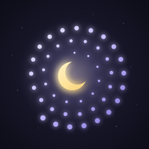

NocturneRecord your dreams each morning by voice, in writing, or with a few guided questions. Over time, Nocturne shows you the symbols that keep returning, with an optional astrology layer and short lessons about dreaming.
Questions, problems or ideas? Email 32nddegdesigns@gmail.com. We read everything.
Only on your phone, encrypted. There’s no account and no cloud copy. See the privacy policy for details.
Settings › Export journal creates a text copy you can save to Files, Notes or email to yourself. Deleting the app deletes the journal, so export first.
When turned on in Settings, Claude (an AI model by Anthropic) polishes your words into a written account of the dream. It uses only what you said, and nothing is kept on our side. Turn it off and Nocturne writes it up on your phone instead.
Check that notifications are allowed for Nocturne in your phone’s Settings, and that Settings › Morning nudge is on in the app.